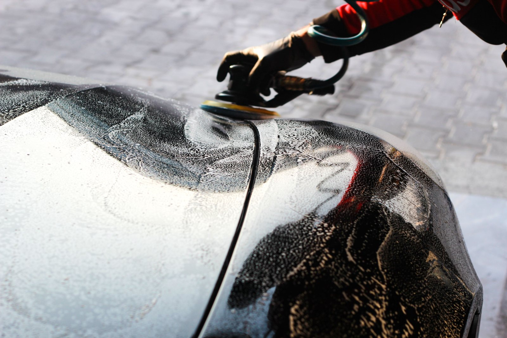
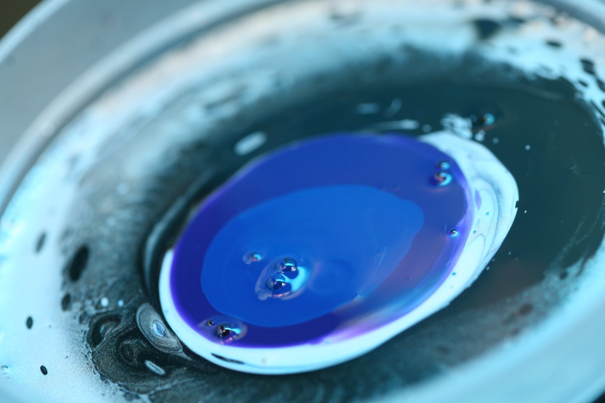
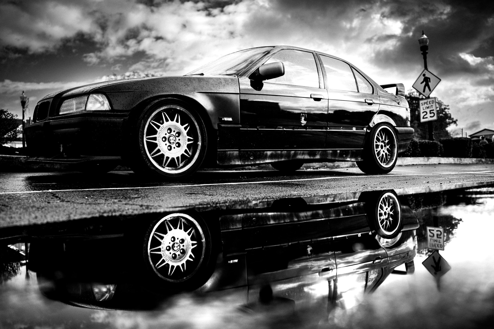
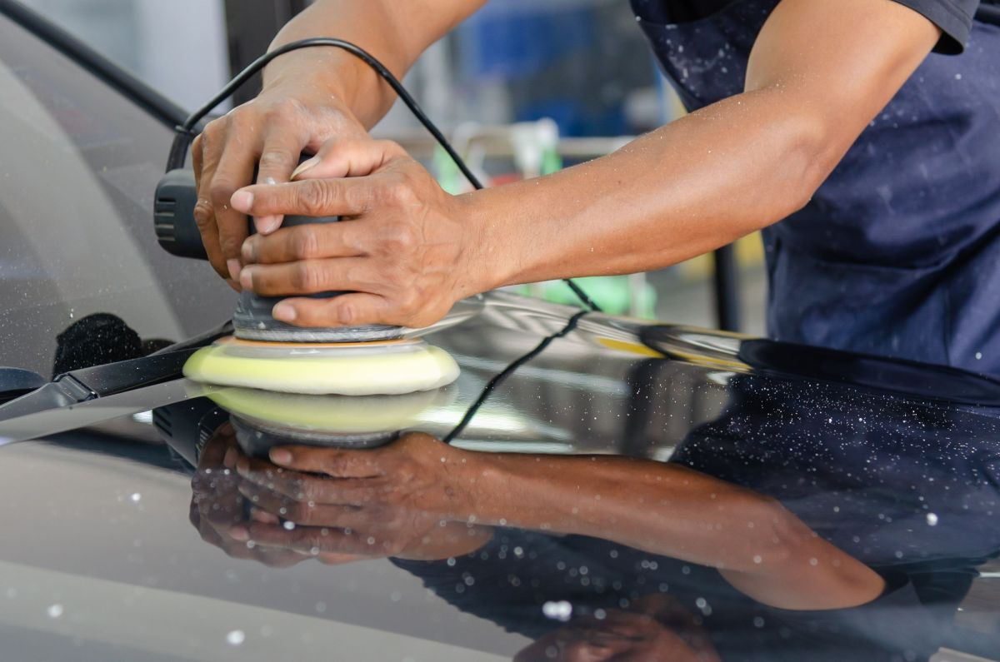
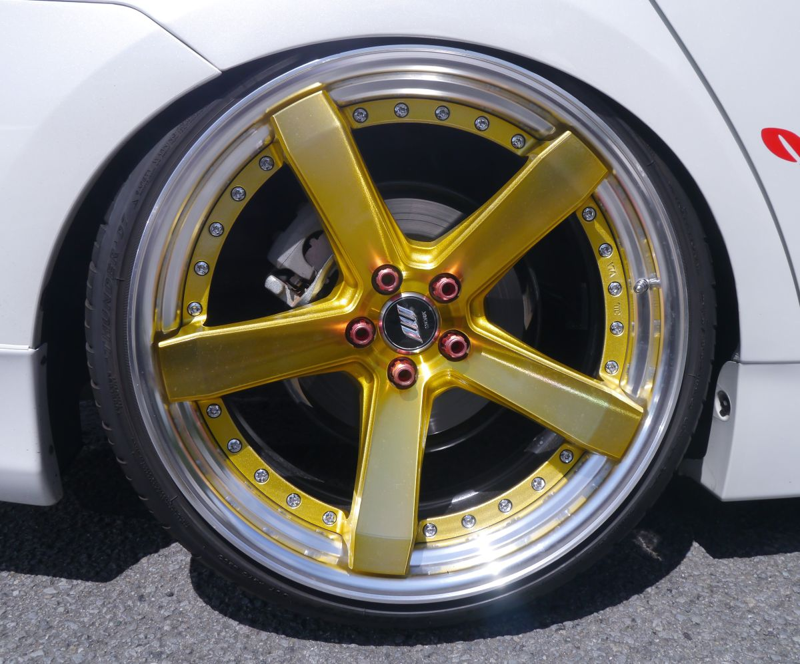
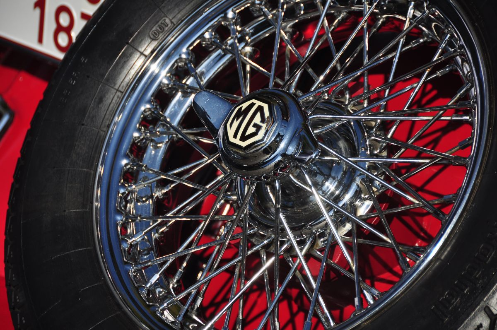
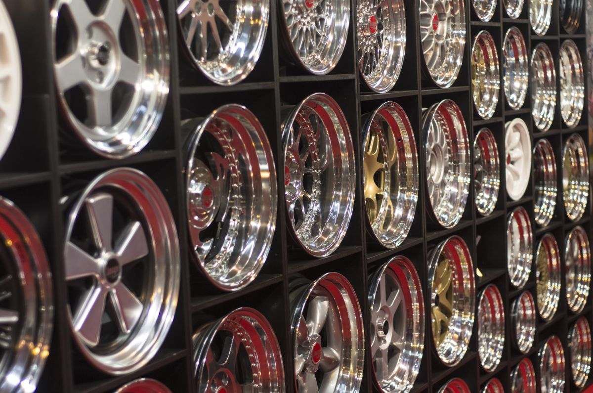
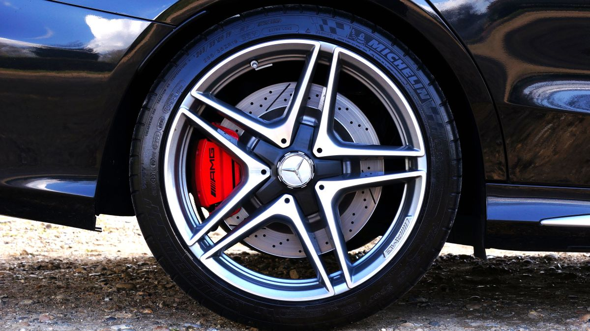

Restauración y renovación de vehículos · Puerto Montt
La pintura no está muerta. Está opaca.
Casi todo auto que parece viejo tiene la pintura entera debajo de una capa de contaminación y micro-rayas. Eso se corrige, no se pinta. Acá está explicado cuánto se puede recuperar y cómo.
- 96%de recomendación en 28 reseñas de Facebook
- 4niveles de trabajo, del lavado al cerámico
- 0páginas web hasta hoy
La pieza central
Arrastre y vea la diferencia.
Tres zonas, tres trabajos distintos. Mueva el control y la pintura opaca se vuelve espejo. Es la única forma honesta de vender detailing: mostrándolo, no describiéndolo.
Los tres pares de abajo son simulados: la mitad «antes» es la misma foto con el brillo y el color bajados por software. Se reemplazan por pares reales del taller — es la primera cosa que hay que pedirle al dueño, y la que más vende.

Antes
Antes
Un auto bien hecho se reconoce por el reflejo, no por el brillo.
El brillo lo da cualquier cera. El reflejo nítido —donde se ve el borde de las cosas— sólo lo da la corrección.
Los niveles
Cuatro niveles, y qué incluye cada uno.
La confusión más cara del rubro es creer que «pulido» es una sola cosa. Son cuatro trabajos distintos, con tiempos y resultados distintos. Los valores y las horas van como ejemplo hasta que el taller los confirme.
-
01
Lavado de detalle
Lavado a dos baldes, llantas, pasarruedas, vidrios y secado sin contacto.
Deja el auto limpio de verdad. No corrige nada de la pintura.
2–3 h · desde $25.000
-
02
Descontaminado
Barra de arcilla y descontaminante férrico: saca lo que el lavado no saca.
La pintura queda lisa al tacto. Es el paso obligatorio antes de pulir.
3–5 h · desde $55.000
-
03
Corrección de pintura
Pulido por pasos con máquina: saca micro-rayas, marcas de lavado y opacidad.
Es el nivel donde el auto cambia de verdad. Lo que se ve en el comparador de arriba.
1–2 días · desde $150.000
-
04
Sellado cerámico
Capa protectora sobre la pintura ya corregida.
Protege el trabajo del nivel 3 y hace que el lavado siguiente sea más fácil. Sin corregir antes, sella el defecto.
1 día extra · desde $180.000
El proceso
Por qué un pulido bien hecho toma dos días.
Un auto entra sucio y sale reflejando. Entre medio hay etapas que no se pueden saltar: si se pule sobre una pintura contaminada, la misma máquina arrastra la suciedad y raya más de lo que corrige.
Eso es exactamente lo que separa un trabajo de $30.000 de uno de $150.000, y es lo que ningún cliente entiende hasta que se lo explican por escrito. Escrito acá, deja de ser una discusión de precio.
«Casi ningún auto necesita pintura. Necesita que alguien le saque lo que tiene encima.»
El trabajo
Detalle por detalle.





Agendar
Cuatro datos y sabemos qué auto llega.
El detailing se cotiza por auto, no por lista: el color, el tamaño y el estado cambian las horas. Con esto el taller responde con un número, no con «tráigalo y vemos».
- Dónde están
- Puerto Montt
- Reseñas
- 96% de recomendación en 28 opiniones de Facebook
- Horario
- Lunes a sábado, con hora reservada
- Teléfono
- Falta: no está publicado
Pedir una cotización
Sin JavaScript los campos siguen ahí y sirven de guía de qué contar. Lo único que se pierde es que el texto se arme solo.
Para el dueño
Qué es esto y qué falta.
Qué es
Una propuesta de sitio web hecha por nuestra cuenta. Puerto Detailer no la encargó ni la ha revisado. Lo único que dimos por cierto es lo que ustedes publican: el rubro y el 96% de recomendación con 28 reseñas.
Qué es ejemplo
Los cuatro niveles, sus tiempos y sus valores; el horario; y el teléfono, que no está publicado. Los tres pares del comparador son simulaciones hechas con software y lo dicen en pantalla — no fingimos que son trabajos suyos.
Qué cambiaría la página entera
Tres pares reales de antes y después, tomados desde el mismo punto y con la misma luz. En este rubro esa foto es el producto: con ellas el comparador deja de ser un ejemplo y pasa a ser su portafolio.